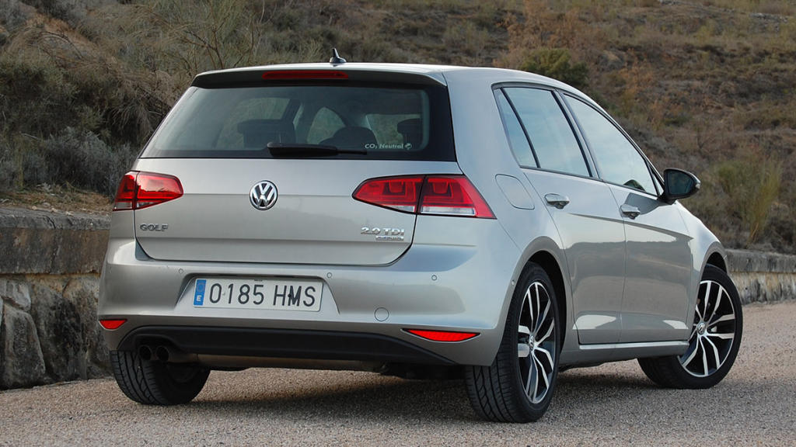
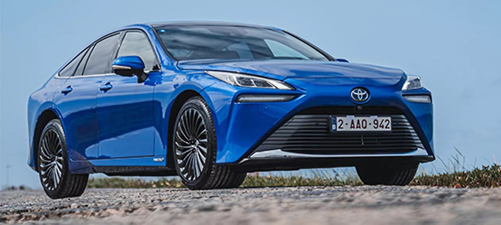
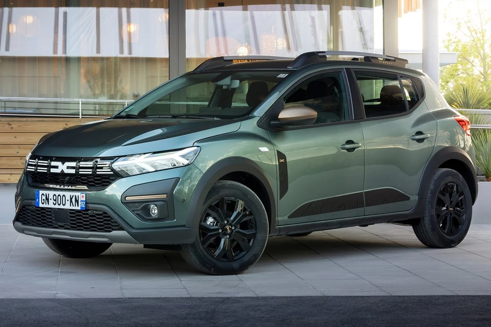
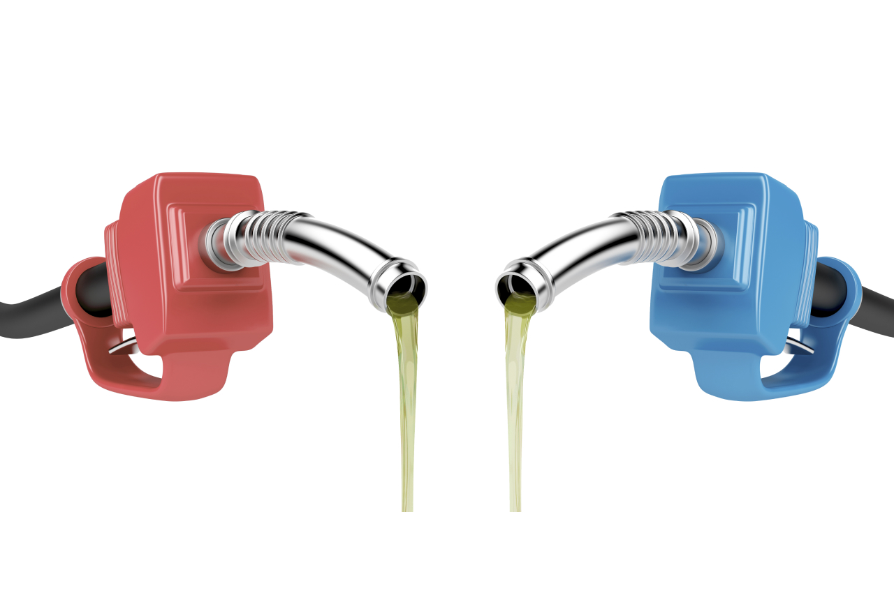
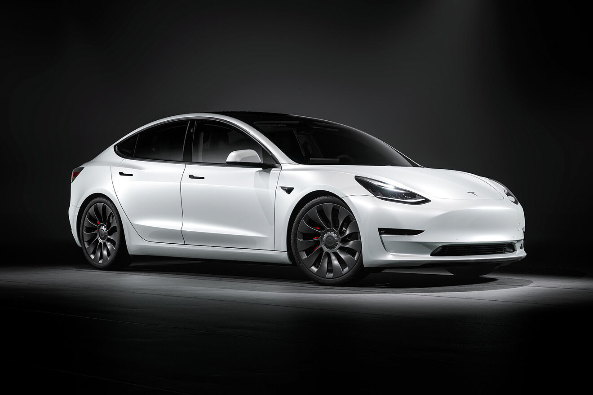
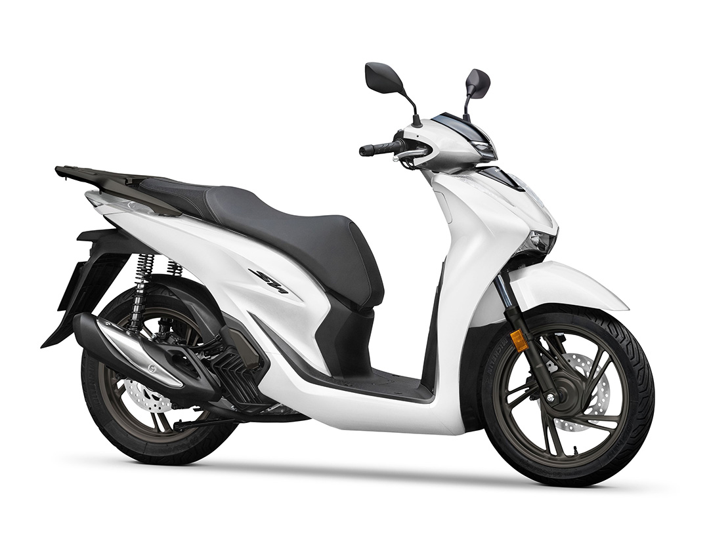

NOVEDADES
Ultimas noticias acerca de los coches de combustión
Volkswagen y sus inversiones en Brasil
Volkswagen va a doblar sus inversiones en Brasil hasta llegar a los 16.000 millones de reales brasileños (2.983 millones de euros), tras anunciar este viernes una ampliación de sus inversiones por valor de 9.000 millones de reales (1.678 millones de euros) entre 2026 y 2028.

En concreto, el fabricante alemán ya tenía previsto invertir unos 7.000 millones de reales (1.305 millones de euros) en Brasil entre 2022 y 2026, a los que ahora se suman otros 9.000 millones de reales. Con la cifra final, Volkswagen se convierte en la firma automovilística que más invierte en el país sudamericano en el período pospandemia, según ha destacado en un comunicado.
Hasta 2028, Volkswagen lanzarán 16 nuevos vehículos, incluidos modelos híbridos, 100% eléctricos y Total Flex. En el primer momento, el nuevo aporte contempla el desarrollo de una producción de proyectos innovadores y con foco en descarbonización para las 4 fábricas de Volkswagen do Brasil.
El consejero delegado de Volkswagen Brasil, Ciro Possobom, ha destacado la trayectoria consolidado de la compañía en el país, que les permite seguir apostando por invertir para el desarrollo de una producción de proyectos innovadores y con foco en descarbonización para las cuatro fábricas de Volkswagen en Brasil.
Inéditos en el portfolio de Volkswagen en Brasil, los nuevos modelos serán "fundamentales" para impulsar aún más la estrategia de descarbonización de la marca en la región de Sudamérica, alineada con su estrategia global 'Way to Zero' , que prevé la neutralidad de carbono en todas las unidades de Volkswagen en el mundo, considerando productos y procesos
Marcas más vendidas durante el comienzo del año
Toyota arranca 2024 como la marca más vendida en España y el Dacia Sandero como el modelo más 'popular' Toyota cerró el primer mes de 2024 como la marca más vendida en España, con un total de 7.615 unidades matriculadas, mientras que el Dacia Sandero, con 2.233 vehículos entregados, finalizó enero como el modelo más 'popular' en el país, según datos de las asociaciones de fabricantes (Anfac), concesionarios (Faconauto) y vendedores (Ganvam).

Con estas cifras, Toyota continúa en el primer mes de 2024 liderando las marcas en España, al igual que hizo en el arranque de los dos ejercicios anteriores, al tiempo que su volumen de matriculaciones es un 14,8% superior a las 6.631 unidades de enero de 2023.
La segunda marca más vendida en España en enero fue Seat, con 5.073 unidades, lo cual supone un incremento del 14,7% en comparación con enero de 2023, y el podio lo completa Kia, que cerró 2023 en segunda posición, con 4.594 matriculaciones, un 2,2% menos que hace un año.
Modelos más vendidos
Por otro lado, el Dacia Sandero mantiene su liderazgo y volvió a ser el modelo más vendido en enero de 2024, con un total de 2.233 unidades, un 1,7% más en la comparativa interanual. En ese sentido, el Dacia Sandero cerró el año como el modelo más vendido en España, con 27.951 unidades entregadas.

El segundo modelo con mayor número de matriculaciones en España en el arranque de 2024 fue el , con 2.143 unidades (+37,5% en términos interanuales), y cierra el podio el MG ZS chino, con 1.626 Toyota Corollaautomóviles matriculados, más de cuatro veces más (+313,7%) que en el mismo mes de 2023
¿Contamina más un coche diésel que uno de gasolina?
La elección entre gasolina o diésel depende de diversos factores, como la potencia, el tipo de uso del vehículo o las preferencias del cliente en cuanto a las respuestas, pero fundamentalmente la decisión viene condicionada por el consumo. Los diésel registran un gasto más bajo. Y aunque en ocasiones el diésel está más caro que la gasolina, por lo general el precio del gasoil es inferior.
En cuanto al argumentos medioambiental, hay dudas. ¿Contamina más un coche diésel? Los motores de gasóleo están en entredicho desde 2015, cuando se inició el escándalo del Dieselgate. Entonces el gasóleo fue demonizado por el mayor efecto negativo de sus emisiones en comparación con los alimentados por gasolina. Sobre todo por liberar más cantidad de partículas sólidas a la atmósfera, una contaminación muy nociva para la salud.

En su descargo, hay que decir que los motores diésel de última generación, y que cumplen las normas Euro 6, son equiparables en emisiones a los de gasolina. La clave es que van equipados con un filtro de partículas que reduce al mínimo este tipo de emisiones.
Diferencias entre la gasolina y el diésel
La principal diferencia al usar uno u otro tipo de motor está en el propio carburante, por lo que se debe poner mucha atención al repostar. Equivocarse en el surtidor de la gasolinera puede estropear el motor.
La gasolina, o bencina como se llama en algunos países, es un combustible formado por hidrocarburos más ligeros, mientras que el gasóleo está compuesto de moléculas más pesadas. Como en el caso de la gasolina también son obtenidas por la destilación del petróleo bruto.
La diferencia de funcionamiento mecánico entre ambos tipos de motor no se reduce al combustible empleado. En el motor de gasolina, el carburante se mezcla con el aire dentro de los cilindros y, una vez comprimida la mezcla por el pistón, se detona mediante la chispa de una bujía.
Por el contrario, en los diésel, el gasóleo se inyecta justo después de comprimir el aire, provocando así una autodetonación sin necesidad de recurrir a una bujía.
Ultimas noticias acerca de los coches eléctricos
Un coche eléctrico hecho para viajar: 550 km de autonomía y 570 litros de maletero
Tras el éxito obtenido por la nueva generación del Serie 5 en su versión sedán, BMW presenta el esperado modelo familiar, el Serie 5 Touring, que combina tecnología avanzada con un amplio espacio e incluye también una versión eléctrica.

Era más que evidente que la marca BMW ampliaría su línea Serie 5 con una versión Touring. Después de varios intrigantes avances, incluyendo una muestra del modelo M5, el Serie 5 Touring se ha desvelado completamente antes de su lanzamiento a mediados de 2024. Estará disponible en variantes de combustión interna, híbridas enchufables y, por primera vez, totalmente eléctricas.
Producido en la planta de Dingolfing del Grupo BMW en Alemania, el Serie 5 Touring estará disponible a partir de mayo de 2024, con precios aún por confirmar.
Lo más destacado del BMW Serie 5 Touring
El diseño del BMW Serie 5 Touring sigue, en buena parte, la estética de la serie los Serie 5 y BMW i5 berlina. Pero la parte trasera ha sido totalmente rediseñada para ofrecer más espacio y comodidad a los pasajeros, con un elegante estilo que se complementa con un spoiler trasero.
En la parte frontal conserva los nuevos faros LED introducidos en el Serie 5, con la opción de una parrilla iluminada con el BMW Iconic Glow. Las llantas de aleación ligera vienen de serie en tamaños de 18 ó 19 pulgadas, con opciones de hasta 21 pulgadas. Además, se ofrecen distintos acabados para personalizar el estilo del vehículo, incluyendo paquetes opcionales como el M Sport Package, M Sport Package Pro y M Carbon Exterior Package.
Con unas dimensiones de 5,06 metros de largo, 1,90 metros de ancho y 1,51 metros de alto, el Serie 5 Touring ofrece más espacio que su predecesor. Su maletero ha pasado de 570 a 1.700 litros, e incluye un portón trasero de accionamiento automático. Además, las versiones enchufables cuentan con compartimentos bajo el piso para guardar los cables de carga.
En cuanto a tecnología, el Serie 5 Touring incorpora el BMW Curved Display, con una instrumentación digital de 14,9 pulgadas y una pantalla central de infoentretenimiento de 12,3 pulgadas. Además, otros elementos destacados son el volante multifunción, una elegante consola central y opciones de tapicería en cuero vegano o cuero Merino en varios colores
La gente está comprando más coches eléctricos de Tesla que nunca, mientras que las grandes empresas intentan deshacerse de ellos a cualquier precio
Tesla vende coches como churros a particulares, hasta el punto de que el Tesla Model Y se ha convertido en el coche más vendido en el mundo en 2023. Pero las cosas no están yendo igual de bien si hablamos de las ventas a empresas.
Grandes compañías, como Hertz, Sixt y la informática SAP decidieron incorporar miles de coches eléctricos de Tesla a sus flotas, pero ahora han cambiado de idea.
Con los coches eléctricos todo es nuevo. Son vehículos con unas características muy particulares y ahora que van ganando protagonismo en nuestras ciudades y carreteras, ya hay quien puede hacer balance sobre ellos. Para algunos, compensa tener un coche de este tipo frente a un térmico, pero otros han comprobado que son la mejor opción.

Por supuesto, esto es muy particular y no son pocos los que han decidido pasar para siempre de los coches con motor de combustión, pero también hay quien recula, como la empresa Hertz. Hace tres años, esta alquiladora compró 100.000 vehículos eléctricos, ahora se está deshaciendo de ellos.
No es que Hertz renuncie a los coches eléctricos a partir de ahora, pero sí ha rebajado expectativas en sus planes de electrificación y ha decidido cambiar su estrategia para ralentizar la transición de su flota al coche eléctrico.
Los coches eléctricos no son tan rentables como estaba previsto. Por un lado, sus averías son demasiado caras y, por otro, se deprecian demasiado, en buena medida porque los precios de los coches eléctricos nuevos no dejan de bajar. En el caso de Tesla en particular, sus modelos acumularon varias rebajas a lo largo del año pasado y eso provocó que su valor en el mercado de ocasión cayese en picado.
Con este panorama, Hertz decidió vender antes de que sus Tesla se deprecien más y ahora tampoco quiere más Polestar. En 2022, Hertz y Polestar llegaron a un acuerdo para que la marca sueca suministrase 65.000 unidades de sus coches eléctricos a la alquiladora hasta 2027, pero Hertz ha cambiado sus planes y mucho antes de que llegue 2027 ha cancelado el pedido.
Ultimas noticias acerca de las motos
Honda SH125i 2024: Innovación ecológica y estética futurista en su versión Vetro
La firma del ala dorada presenta la versión 2024 de su icónico Honda SH 125i con novedades que lo posicionan como un scooter más ecológico y estéticamente impactante que nunca. La incorporación de la nueva opción estética Vetro no solo ofrece un diseño espectacular, sino que también contribuye significativamente a la reducción de emisiones.

A pesar de mantener la esencia que ha convertido al Honda SH en un referente en la movilidad urbana sobre dos ruedas, la nueva versión se adapta a las demandas ambientales con una actualización mecánica que cumple con la próxima normativa medioambiental Euro5+.
Este logro se alcanza gracias a un nuevo sistema de monitorización del catalizador, a la reducción del umbral para identificar fallos relacionados con las emisiones, y al estricto cumplimiento de requisitos de ruido y emisiones a largo plazo.
Bello y ecológico
Los procesos de fabricación, que dan lugar a la nueva estética Vetro, reducen en un 9,5% las emisiones contaminantes respecto a los métodos tradicionales de pintura.
A todo ello, por supuesto, también debemos sumarle el sistema Idle Stop de paro al ralentí, un ingenioso sistema ideado por Honda que actúa conjuntamente con el silencioso y rápido arranque por alternador. Este sistema permite detener el motor en los semáforos en rojo y ponerlo en marcha de inmediato cuando este se pone de nuevo en verde.
Pero además, en el caso concreto de esta versión Vetro, Honda va un poco más allá. Estos paneles verdes semi transparentes, sin pintar, producen un 9,5% menos de emisiones al año en comparación con los métodos tradicionales de pintura. Todo cuenta cuando se trata de cuidar el planeta
Aunque por supuesto, tampoco podemos olvidarnos de su impacto visual, con un efecto semitransparente espectacular, dejando entrever sus componentes internos, combinado con sus espectaculares ópticas LED delanteras y traseras, y unas formas sinuosas perfectamente rematadas con algún que otro discreto cromado y unas pocas fibras pintadas en color negro, que le confieren un aspecto elegante y tecnológico.
Adiós a las motos de 125 cc: la medida que plantea la DGT para todos los conductores de este vehículo
La Asociación Nacional de Motoristas ve positivo que las personas con carné de conducir B y tres años de antigüedad tengan que realizar un curso obligatorio para poder conducir una motocicleta de hasta 125 cc, una de las medidas con las que Tráfico pretende reducir las muertes en carretera del colectivo.
Se trata de una antigua reivindicación de esta asociación, ha explicado a EFE su presidente, Juan Manuel Reyes, que lo ha justificado en que no es lo mismo conducir un coche que una moto "por pequeña que sea", para lo que se requiere una pericia y unos conocimientos técnicos específicos.
La decisión está tomada y se tramitará
La medida la anunció este jueves el ministro del Interior, Fernando Grande-Marslaka, quien precisó que el curso se pondrá en marcha en "fechas próximas". Fue durante la rueda de prensa en la que informó de los datos de siniestralidad vial de 2023, que confirman la tendencia al alza de las muertes de motoristas. Un total de 299 fallecidos el pasado año, 45 más que en 2022, lo que supone un incremento del 19 %.
La puesta en marca del curso necesita de una reforma del reglamento de circulación, pero está tomada la decisión y se tramitará, aunque "llevará su tiempo", ha asegurado este viernes el director general de Tráfico, Pere Navarro.
Antes, los responsables de la Dirección General de Tráfico (DGT) se reunirán con sus colegas de Francia, donde ya existe este curso que instruye sobre el manejo de las dos ruedas y, posteriormente, lo harán con los ayuntamientos y con los motoristas, ha explicado Navarro en Onda Cero.